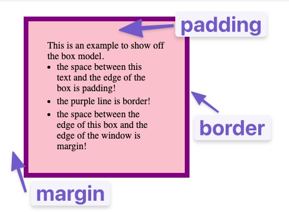
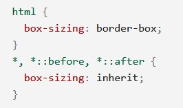

Everything on a webpage is a rectangle. Boxes, nested in other boxes.
In the standard box model, if you give a box a width and height attribute, this defines the width and height of the content box. Any padding and border is then added to that width and height to get the total size taken up by the box. The margin is not counted towards the actual size of the box!
To turn on the alternative CSS box model for an element, set box-sizing: border-box on it. Using this model, any width is the width of the visible box on the page, therefore the content area width is that width minus the width for the padding and border. The size of borders will make the content-box smaller. If you want all elements to use the alternative box model, set box-sizing property on the html Element, then set all other elements to inherit it like shown below:
Using the alternative Box Model is a common choice among developers
If two elements whose margins touch have both positive margins, the margin between will be the largest individual margin. If one margin is negative, its value will be subtracted from the total. Where both are negative, the margins will collapse and the smallest (furthest from zero) value will be used.
It is possible to change how a box is calculated by changing the display property